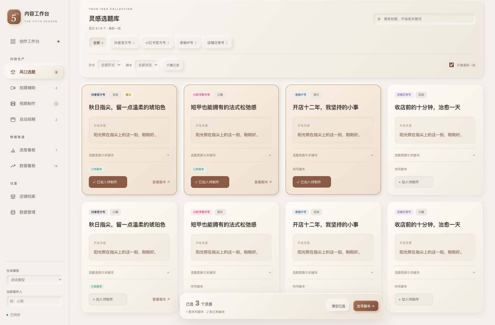
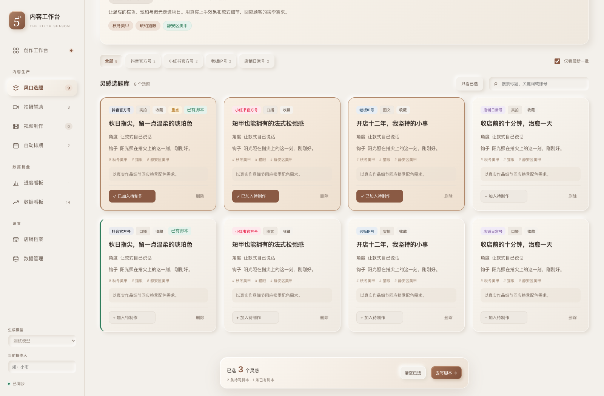
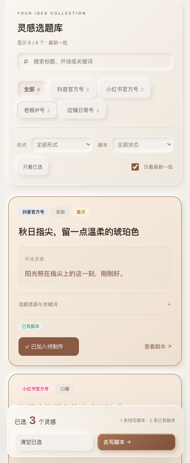

先找到灵感，再展开思路。
标题与开场先呈现，角度、目标和关键词按需展开。形式、脚本状态和账号可组合筛选，已有脚本直接打开。
以下为同一组隔离示例数据的实际浏览器截图，不连接云端。



查看脚本不会自动勾选选题；清除筛选保留当前批次范围。原有勾选保存与删除确认流程继续保留。
标题与开场先呈现，角度、目标和关键词按需展开。形式、脚本状态和账号可组合筛选，已有脚本直接打开。
以下为同一组隔离示例数据的实际浏览器截图，不连接云端。



查看脚本不会自动勾选选题；清除筛选保留当前批次范围。原有勾选保存与删除确认流程继续保留。